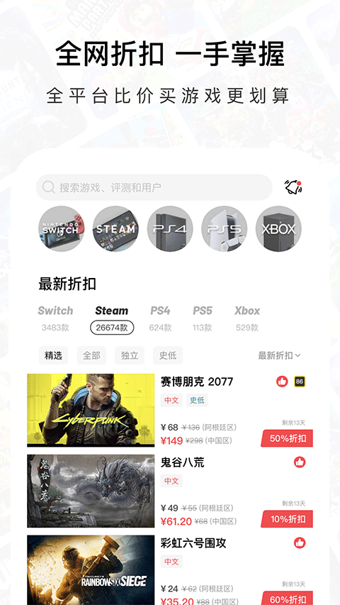
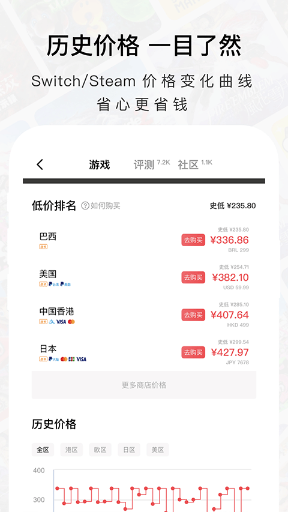

Jump 用了半年踩的四个坑，最后一个差点浪费三百块
作为一个从 Switch 新玩家一路用到多平台党，把 Jump 当比价工具用的同时踩了不少隐形的坑——退款找错门、加速开了忘还原、榜单热就跟风入、低价排名不看区域锁。这篇把我踩过的坑和提前避开的方法整理出来。
去年双十一入了 Switch，朋友推我装 Jump官网，说能查低价、看攻略、找同好。从 官方下载 装好后打开首页一张打折列表甩过来，确实方便——直到有一天我拿着刚买的游戏找客服退款，被来回踢皮球踢了半小时才反应过来：这个应用看着简单，其实有几个坑是新手很容易掉进去的。
坑一：退款找错了门，两边客服都不认
症状：在 Jump 上看到某游戏巴西区打了三折，冲动下单后玩了半小时觉得不对，找 Jump 客服说要退，客服说不归他们管；找任天堂，任天堂说订单不是从他们商店下的。两边推了一圈，最后硬着头皮玩下去了。
原因：Jump 本质是比价导购平台，不是游戏销售方。你点进 Jump 里的购买链接，实际跳转到的是对应平台的官方商店（Steam、任天堂 eShop、PS 商店等）。游戏本身的退款，规则在平台那边；但如果是 Jump 里买的家庭会员拼车、数字点卡这些应用内订单，那才是 Jump 客服管的。很多新用户没意识到这个边界，出了问题两边跑。

解法：退款前先搞清楚你买的是什么。游戏本体 → 找平台官方走官方退款政策（Steam 两周内两小时游玩门槛、任天堂各区规则不同）；家庭会员拼车 / 点卡 → Jump 应用内客服。另外，拼车订单记得留好截图和支付凭证，退差纠纷时这是唯一证据。
坑二：开了加速忘还原，换网络后上不了网
症状：某次为了加速下载《塞尔达》，跟着 Jump 的引导改了路由器 DNS，下载完之后几个月没管。后来换了宽带运营商，打开 Switch 商店直接报错，折腾了两个小时才想起：那台路由器的 DNS 还是改完加速后的设置。
原因：Jump 的加速功能通过修改主机网络配置（主要是 DNS 和代理）实现。这些设置是持久生效的——你关了加速流量，主机上的 DNS 不会自动还原。大多数人加速下载完就忘了这回事，等到换网络、换路由器或者运营商调整线路时才炸。
解法：改 DNS 之前拍个照记下原始配置。加速用完直接在主机网络设置里改回去，或者至少在 Jump 里关掉加速服务。免费加速流量靠签到攒，重度下载可能不够用，但别为了省那点流量就一直挂着加速不关。

坑三：榜单热就跟风入，结果买了根本不想玩
症状：首页热销榜前三常年有某款多人联机游戏，看大家都在买我也跟着入了。结果自己是单机党，进去打了两局匹配不到人，现在游戏库里吃灰。
原因：Jump 的三张榜单（热搜、热销、期待）反映的是站内玩家的集体行为——大家最近在搜什么、在买什么、在盼什么。但"大家都在玩"不等于"适合你玩"。榜单是入口参考，不是购买指南。热销榜常客只能说明社区关注度高、评测数量多，不代表这款游戏的玩法、风格适合你的口味。
解法：看到榜单上的心动游戏，先点进详情页看历史价格曲线——如果常年打折说明厂商自己也知道不值原价入；再翻翻评分区的差评，看有没有人提到你介意的点（比如优化差、联机渣、剧情虎头蛇尾）。榜单帮你发现游戏，决策还是要自己做。想了解榜单的具体排序逻辑和更多细节，可以去 Jump文档 翻一下说明。

坑四：低价排名不看区域锁，买完才发现连不上
症状：低价排名里巴西区某游戏比港服便宜一半，直接下单。下载安装完启动时弹出区域限制提示，必须用巴西区账号登录才能玩，而我主号是港服。折腾了一下午搞不定跨区登录，最后还是重新在港服买了一份。
原因：Jump 的低价排名只是把各区域商店的价格排在一起，默认假设你会买对应区域的账号和点卡。但很多人忽略了区域锁的问题——有些游戏支持跨区、有些不支持，Jump 在低价排名里不会特意标注哪些有区域限制、哪些没有。低价排名的核心是"同款游戏最低多少钱能买到"，不是"最低多少钱能在你的账号上直接玩"。
解法：看到低价排名心动的游戏，先打开 Jump 里的详情页，看有没有玩家标注区域限制的评论或者评测。如果想跨区买，至少提前知道自己的主机能不能切换区域、点卡有没有对应区域的、游戏有没有语言障碍。便宜不代表省心，跨区买游戏之前多查五分钟比事后重新买省钱。
防坑清单
四个坑踩下来，总结几条速查：
- 退款先搞清楚订单在哪产生的：游戏本体走平台，会员点卡走 Jump 客服，别两边瞎跑
- 改 DNS 加速之前拍原始配置照，用完记得还原，别留隐患
- 榜单只当入口参考，决策前必须看历史价格曲线和差评区
- 低价排名心动之前先查区域锁，跨区买游戏提前确认账号和语言兼容性
知道这些坑之后，Jump 其实相当省心——比价省了不少钱、攻略中心帮我少卡了好多关、社区里偶尔能挖到冷门好游戏。它就是个工具，关键是用的时候别太想当然。顺便提一句，这些整理好的资料在 GitHub、Gitee 和 GitCode 上都能拿到，哪个用着顺手就看哪个。